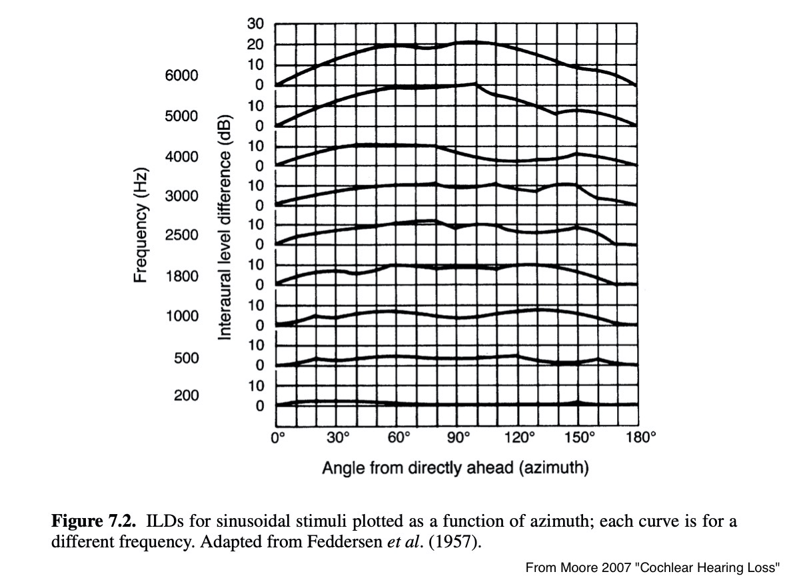

Perception of Frequency
Perception of Loudness
Perception of Location

Hertz captures cycles per second
… but not our perception of frequency!
We’ve already talked about auditory masking
We also percieve jumps in frequency non-linearly
Is the jump in file A the same as in file B?
A.
B.
Is the jump in file A the same as in file B?
A.
B.
Mel scaling
Bark scaling
Maps numerical pitch measures to human perceptions of changes in pitch
People will tell you that a sound’s pitch is ‘half as high’ at x/2 mels relative to x mels
Mel is the dominant perceptual frequency scale in use

Mel(f) = 1125 * ln(1+f/700)
The same basic idea, but using the critical bands themselves!
Each ‘band’ in bark is centered around the psychoacoustic critical bands
Bark(f)=13*arctan(0.00076*f)+3.5*arctan((f/(7500))*(f/(7500)))

Doesn’t really matter!
Linguists tend to use Bark
The important part is knowing that we don’t hear Hertz linearly!

Perceived amplitude is not linear with pressure


Duration
Amplitude
Frequency (Period, Wavelength)
Phase
Our perception is shaped by our evolution!
The most important ranges for speech and survival are amplified
None of our perceptions of anything are accurate
Everything you’ve ever known is just a matrix of perceptual data
You can’t prove anything you’ve ever experienced happened, just that you perceived that it did.
We’re just isolated mindstates groping through an invisible world using our strange detectors

“Did that lion just roar from behind me or in front of me?”
“Where is that bird tweeting from?”
“Where did that spring just go?”

All positions can be calculated based on vertical and horizontal knowledge
So, we just need to figure out two dimensions!
Turns out that we still try, even though it doesn’t work anymore
… but we can’t, so we need to figure out how to do…
Both rely on binaural information
Differences in timing between ears
Differences in loudness between ears


Interaural time differences are used mostly in low frequencies
Interaural amplitude differences are usable only in high frequencies
The trade-off happens around 1 kHz
Each time my hearing changed, I re-learned where sounds are!
Primarily at higher frequencies
Provided that your head is vertical
How do we get vertical information?

These are pinna-specific
They also involve the resonances of the neck and shoulders
Pinna cues are most important over 6,000 Hz
We’re best at it directly in front of us
We’re pretty bad at it behind us, and directly to our sides

We can move our heads
We can use information from the room
We can use frequency decay over time to judge distance
We can use the doppler effect to identify fast movement
We can identify the source visually
We’re worse at localizing sound when wearing hearing protection
Modeling this is very, very complex
Surround Sound systems cheat by actually playing sounds from different places
[https://medschool.vanderbilt.edu/hearing-speech/research/](hearing/localization_array.jpg”>
<img class=“r-stretch” s
Our perceptions of frequency are deeply non-linear
Our perceptions of amplitude are deeply non-linear
Localization is a hard task
Horizontal Localization uses differences in timing and loudness between ears
Vertical localization relies on pinna cues
This is super complicated